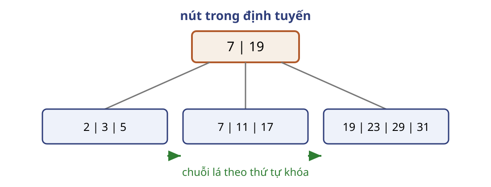
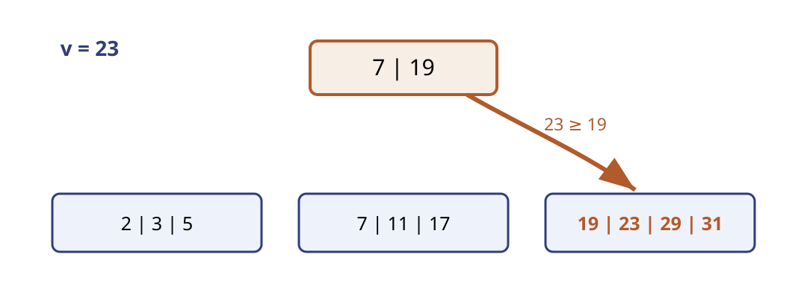
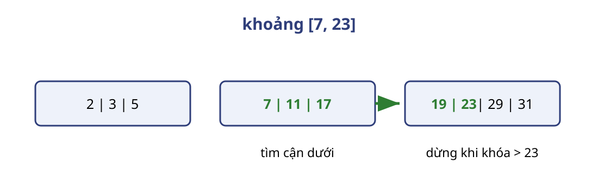
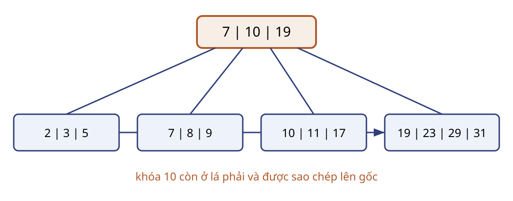
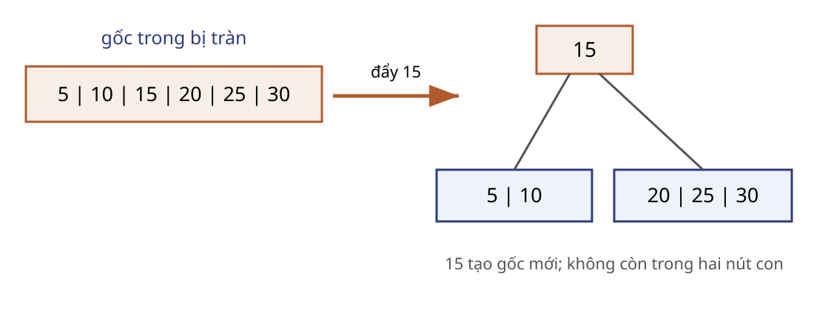
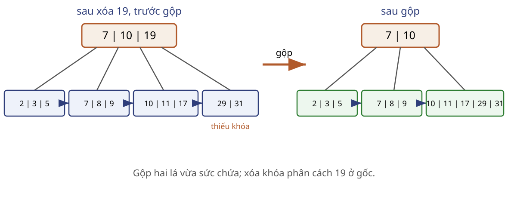
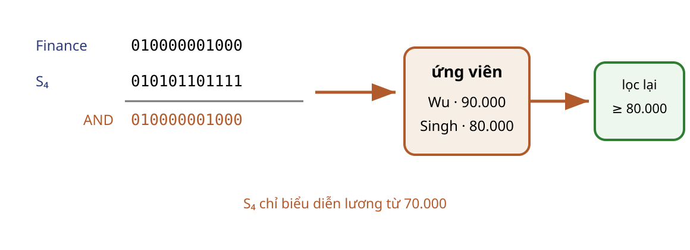

B+-Tree giảm số khối phải đọc Tệp một triệu khóa không vừa bộ nhớ.
Đầu ra: một khóa hoặc một khoảng đã sắp.
Quét toàn tệp là đường cơ sở.
Mỗi nút vừa một khối; hệ số phân nhánh khoảng 100 cho đường gốc–lá khoảng bốn nút.
Quy mô và hệ số phân nhánh lấy từ ví dụ nguồn. Bỏ số thời gian thiết bị đã cũ. Nguồn: Chương 14, trang chiếu 17, 24, 27. 3 phút. Lá giữ dữ liệu, nút trong định tuyến 
Ví dụ từ bài 14.3(b): m=6. Lá giữ khóa và con trỏ bản ghi; nút trong là chỉ mục thưa trên các lá; con trỏ cuối lá nối sang lá kế tiếp. Nguồn: Chương 14, trang chiếu 20–23; lời giải 14.3(b), trang in 100. 3 phút. Vết tìm khóa 23 đi qua hai nút 
Khóa bằng khóa phân cách đi sang cây con bên phải. Gốc [7,19] đưa 23 vào con thứ ba. Nguồn: Chương 14, trang chiếu 22, 25; bài 14.3(b). 3 phút. Bất biến hình dạng giới hạn chiều sâu $m$: số con tối đa của một nút trong.
Mọi nút lá nằm cùng một mức. Mọi nút trong không phải gốc có $\lceil m/2\rceil$ đến $m$ con. Mọi lá không phải gốc có $\lceil(m-1)/2\rceil$ đến $m-1$ khóa. Gốc là lá có thể rỗng; gốc trong có ít nhất hai con. Với m=6, nút trong có 3–6 con và lá có 3–5 khóa. Nguồn: Chương 14, trang chiếu 19, 23. 3 phút. Tìm điểm thu hẹp một miền khóa C ← gốc
while C không phải lá:
chọn con duy nhất có miền chứa v
C ← con đó
trả mục khóa v, danh sách mã bản ghi của nó, hoặc rỗngDanh sách mã định danh bản ghi (RID) là giá trị của một mục khóa, không tạo thêm khóa.
Lõi giả sử khóa duy nhất hoặc một mục khóa trỏ tới danh sách RID. Với khóa ghép (v,RID), tìm cận dưới (v,−∞), rồi quét chuỗi lá đến khóa lớn hơn v. Danh sách RID là giá trị của một mục khóa, không làm tăng số khóa trong lá. Mỗi bước xuống một mức nên dừng. Nguồn: Chương 14, trang chiếu 22, 25, 28, 40. 3 phút. Quét khoảng bắt đầu bằng một lần tìm 
Chi phí còn gồm $D$ khối dữ liệu chứa kết quả.
Với chỉ mục không phân cụm, D có thể chi phối vì bản ghi nằm rải rác. Nguồn: Chương 14, trang chiếu 11, 21, 26, 28. 3 phút. Bất biến định tuyến chứng minh tìm kiếm đúng Mệnh đề: trước mỗi lần xuống, mục khóa $v$ nếu tồn tại nằm trong cây con hiện tại.
Khởi tạo: gốc bao phủ mọi khóa. Duy trì: khóa phân cách chọn đúng miền duy nhất. Kết thúc: lá chứa mục khóa $v$ hoặc xác nhận không có. Mệnh đề dùng khóa duy nhất hoặc một mục trỏ danh sách RID. Với khóa ghép, bất biến tìm đúng cận dưới rồi quét đến khi khóa thứ nhất lớn hơn v. Nguồn: Chương 14, trang chiếu 20–22, 25, 28. 3 phút. Chiều sâu quyết định I/O của cây $d$: số cạnh gốc–lá; $f=\lceil m/2\rceil$: cận dưới số con của nút trong không phải gốc.
$$d=O(\log_f K)$$
Điểm: tối đa $d+1+D$ khối.
Khoảng: tối đa $d+1+L+D$ khối.
Gốc có ít nhất hai con nên chỉ đổi hằng số trong cận; cây chỉ có gốc có d=0, cây rỗng xử lý riêng. N là số khối của tệp dữ liệu khi nói chi phí quét; L là số khối lá đọc thêm sau lá đầu; D là số khối dữ liệu chứa kết quả. Không tính lợi ích bộ nhớ đệm. Nguồn: Chương 14, trang chiếu 24, 27–28. 3 phút. Kiểm tra đường tìm và chi phí Câu hỏi: Với cây $m=6$, tìm 17 đi qua khóa phân cách nào, kết thúc ở lá nào và đọc bao nhiêu nút chỉ mục?
Chọn miền $[7,19)$; đến lá $[7,11,17]$; đọc hai nút chỉ mục.
Cho sinh viên nêu cả quy tắc khi khóa bằng khóa phân cách. Nếu mục lá trỏ sang dữ liệu, còn cộng D khối dữ liệu. Nguồn: bài 14.3(b), lời giải trang in 100. 2 phút.
Cập nhật phải giữ cây cân bằng trực tuyến Dòng bản ghi mới liên tục thêm khóa.
Không thể xây lại toàn bộ chỉ mục sau mỗi cập nhật.
Tách, mượn và gộp chỉ sửa một đường gốc–lá.
Tình huống dùng lại cây m=6 của bài 14.3(b). B+-Tree tự tổ chức bằng thay đổi cục bộ. Nguồn: Chương 14, trang chiếu 17, 29–39. 3 phút. Chèn 9 và 10 chưa làm tràn lá Thao tác Lá giữa Khóa phân cách ở gốc ban đầu 7, 11, 17 7, 19 chèn 9 7, 9, 11, 17 7, 19 chèn 10 7, 9, 10, 11, 17 7, 19
Mỗi lá chứa tối đa m−1=5 khóa. Hai lần chèn đầu chỉ sắp khóa trong lá; khóa phân cách không đổi. Nguồn: bài 14.4 trên cây 14.3(b), lời giải trang in 102. 3 phút. Chèn 8 tạo sáu khóa trong một lá $[7,8,9,10,11,17]\rightarrow[7,8,9]\;|\;[10,11,17]$
Khóa nhỏ nhất của lá phải là 10.
Với m=6, lá tràn có sáu khóa sau chèn và được chia 3–3. Lỗi nguồn ở hình sau Insert 8 ghi lá phải là [9,23,29,31]; giá trị đúng là [19,23,29,31]. Nguồn: bài 14.4, lời giải trang in 102; sửa bằng cách bảo toàn khóa 19. 3 phút. Tách lá sao chép khóa phân cách lên cha 
Khóa 10 vẫn ở lá phải. Một bản sao được chèn vào gốc [7,10,19]. Nguồn: Chương 14, trang chiếu 29–32; bài 14.4(c), lời giải trang in 102. 3 phút. Giả mã chèn tiến triển lên phía gốc insert(v, p):
L ← lá chứa miền của v; chèn (v,p) vào L
while nút hiện tại bị tràn:
nếu là lá: tách và sao chép khóa phân cách
nếu là nút trong: tách và đẩy khóa phân cách
nút hiện tại ← cha
nếu gốc tách: tạo gốc mớiVới danh sách RID: khóa đã có chỉ nhận thêm $p$, không gây tách.
Giả mã hiển thị áp dụng cho khóa duy nhất hoặc khóa ghép (v,p). Nếu một mục khóa v trỏ danh sách RID, khi v đã có chỉ thêm p vào danh sách; số khóa không tăng nên không gây tách. Vòng lặp đi lên một mức nên dừng. Nguồn: Chương 14, trang chiếu 29–33. 3 phút. Tách nút trong đẩy khóa 15 lên cha 
Lá sao chép khóa phân cách; nút trong đẩy khóa phân cách.
Theo trang chiếu 33: với m=6, đẩy 15; trái [5,10], phải [20,25,30]. Khóa 15 không còn trong hai nút mới. 3 phút. Tách bảo toàn ba bất biến Thứ tự: hai nửa vẫn tăng dần. Miền: khóa phân cách mới chia đúng hai cây con. Độ sâu: tách không đổi mức của lá; tách gốc tăng mọi đường cùng một. Sau chuỗi tách, cây chứa đúng đa tập khóa cũ cộng khóa mới và thỏa cận sức chứa. Nguồn: Chương 14, trang chiếu 29–33. 2 phút. Kiểm tra quy tắc tách Câu hỏi: Khóa đưa lên cha còn ở nút con nào sau tách lá và sau tách nút trong?
Tách lá: còn ở lá phải. Tách nút trong: không còn ở hai nút mới.
Kiểm tra giữa cụm trước phần xóa. Nguồn: Chương 14, trang chiếu 30, 33. 1 phút. Xóa có thể làm một lá thiếu khóa Từ cây sau Insert 8:
Xóa 23: $[19,29,31]$ vẫn đủ 3 khóa.
Xóa tiếp 19: $[29,31]$ thiếu khóa.
Với m=6, lá không phải gốc cần ít nhất 3 khóa. Chuỗi thao tác lấy trực tiếp từ bài 14.4(b). Nguồn: lời giải trang in 102–103. 3 phút. Mượn trước, gộp khi hai nút vừa một lá Nếu anh em còn dư, phân phối lại và sửa khóa phân cách ở cha. Nếu hai nút gộp vừa sức chứa, gộp và xóa khóa phân cách ở cha. Nếu cha thiếu con, lặp quy trình lên trên. Thứ tự mượn hay gộp phụ thuộc trạng thái anh em. Với vết hiện tại, lá [10,11,17] và [29,31] gộp vừa năm khóa nên gộp. Nguồn: Chương 14, trang chiếu 34–38. 3 phút. Xóa 19 gộp lá và sửa gốc 
Hình trái là trạng thái sau xóa 19, trước gộp. Kết quả bên phải: gốc [7,10]; ba lá [2,3,5], [7,8,9], [10,11,17,29,31]. Chuỗi lá vẫn tăng và mọi lá cùng độ sâu. Nguồn: bài 14.4(b), lời giải trang in 103. 3 phút. Giả mã xóa xử lý cả khóa vắng delete(v, p):
tìm (v,p); nếu không có: trả “không đổi”
xóa mục khỏi lá L
while L thiếu mục và L không phải gốc:
mượn và sửa cha, hoặc gộp rồi chuyển L lên cha
nếu gốc trong chỉ còn một con: thay gốc bằng conVới danh sách RID: chỉ xóa khóa $v$ khi danh sách đã rỗng.
Giả mã hiển thị áp dụng cho khóa duy nhất hoặc khóa ghép (v,p). Với danh sách RID, trước hết xóa p; chỉ xóa mục khóa v và cân bằng lại khi danh sách rỗng. Khi gộp lá, nối chuỗi lá và xóa khóa phân cách ở cha; khi gộp nút trong, kéo khóa phân cách của cha xuống. Mỗi lần gộp đi lên một mức nên dừng. Nguồn: Chương 14, trang chiếu 37–38. 3 phút. Cập nhật đọc và ghi theo chiều sâu Đọc đường tìm: $O(d+1)$ khối.
Ghi khi lan truyền: tối đa $O(d+1)$ khối.
Câu hỏi: Khi nào chiều sâu tăng hoặc giảm đúng một?
Tăng khi gốc tách; giảm khi gốc trong còn một con. Số nút trên đường gốc–lá là d+1. Nút trong thường ở bộ nhớ đệm nên I/O thực tế có thể thấp hơn. Nguồn: Chương 14, trang chiếu 30, 38–39. 2 phút.
Bitmap Index tránh quét $N$ khối cho nhiều bộ lọc Quan hệ $R$ bản ghi không vừa bộ nhớ.
Đầu ra: bitmap ứng viên cho nhiều điều kiện.
Mỗi trong $q$ giá trị có một bit trên mỗi vị trí bản ghi.
Đường cơ sở là quét toàn quan hệ; bitmap đọc trang bit liên quan rồi lấy D trang dữ liệu ứng viên. Nguồn: Chương 14, trang chiếu 71–75; Chương 24, trang chiếu 11–15. 2 phút. Ba hàng đầu tạo hai bitmap ngắn Chỉ số Tên Khoa Lương 0 Srinivasan Comp. Sci. 65.000 1 Wu Finance 90.000 2 Mozart Music 40.000
Finance = 010 · $S_4$ = 010
Ví dụ đứng trước định nghĩa. Ba hàng lấy trực tiếp từ quan hệ instructor trong lời giải 14.13; S4 là lương từ 70.000. 2 phút. Mỗi vị trí bit ánh xạ một bản ghi Đánh số $R$ bản ghi từ 0 đến $R-1$.
$V_v[i]=1\iff$ bản ghi chỉ số $i$ có giá trị $v$.
Dải $S_4$ là lương từ 70.000, không phải từ 80.000.
Ba hàng trước cho Finance=010 và S4=010. Nguồn: Chương 14, trang chiếu 71–72; bài 14.13. 2 phút. Bốn bitmap lương phủ mười hai bản ghi Dải Bitmap $S_1<50.000$ 001000000000 $S_2:[50.000,60.000)$ 000000000000 $S_3:[60.000,70.000)$ 100010010000 $S_4\ge70.000$ 010101101111
Các vector lấy trực tiếp từ lời giải 14.13(a), theo thứ tự 12 hàng của quan hệ instructor. Kiểm mỗi cột có đúng một bit 1 vì lương không NULL trong dữ liệu này. Nguồn: lời giải trang in 108. 3 phút. Phép AND chỉ tạo tập ứng viên 
Bit 1 ở chỉ số 1 và 8, tức hàng 2 và 9.
Dùng chỉ số từ 0. S4 chỉ bảo đảm lương từ 70.000; phải đọc D khối ứng viên và lọc salary≥80.000. Nguồn: bài 14.13(b), lời giải trang in 109. 3 phút. Bitmap đổi dung lượng lấy phép toán theo từ CPU $\lceil R/w\rceil$ phép toán từ cho mỗi phép Boolean.
Dung lượng chưa nén $qR$ bit; tối đa $(q+2)R$ khi cần $E$ và NULL.
I/O gồm trang bitmap liên quan và $D$ khối dữ liệu ứng viên.
q bitmap giá trị chiếm qR bit. Bitmap tồn tại E và bitmap NULL, nếu cần, cộng lần lượt R bit. Chèn hoặc đổi giá trị sửa các bit liên quan; xóa sửa E. Nguồn: Chương 14, trang chiếu 73–75; Chương 24, trang chiếu 13–15. 3 phút. NOT cần mặt nạ tồn tại và NULL $$\operatorname{NOT}(A=v)=E\land\lnot V_v\land\lnot V_{\mathrm{NULL}}$$
Trạng thái $E$ $V_v$ $V_{NULL}$ Kết quả khác v 1 0 0 1 bằng v 1 1 0 0 NULL 1 0 1 0 đã xóa 0 0 0 0
Bảng triển khai trực tiếp bitmap tồn tại và bitmap NULL của nguồn. Nguồn: Chương 24, trang chiếu 14. 3 phút. Bất biến bit bảo toàn tập kết quả Bất biến: sau mỗi phép toán, bit $i=1$ đúng khi bản ghi $i$ thỏa biểu thức Boolean đã xử lý và còn tồn tại.
Sau khi liệt kê bit 1, kiểm lại mọi điều kiện chưa được bitmap biểu diễn chính xác.
Chứng minh theo từng vị trí bit và bảng chân trị của AND, OR, NOT đã được che bởi E và NULL. Điều kiện dư như salary≥80.000 sau S4 phải lọc trên bản ghi thật. Nguồn: Chương 24, trang chiếu 13–14; bài 14.13. 2 phút. Kiểm tra phủ định bitmap $E=1110$, $V_v=1000$, $V_{\mathrm{NULL}}=0010$.
Câu hỏi: Tính bitmap cho $\operatorname{NOT}(A=v)$.
$1110\land0111\land1101=0100$.
Yêu cầu tính từng bước và giải thích vì sao NULL cùng vị trí đã xóa đều bằng 0. Nguồn: Chương 24, trang chiếu 14. 1 phút.
Bài tập trên lớp 14.1: chi phí của quá nhiều chỉ mục. 14.3(b): dựng B+-Tree với $m=6$. 14.4: cập nhật chính cây vừa dựng. 14.13: bitmap lương và khoa. Tổng 60 phút. Nguồn: Database System Concepts 7e, Practice Exercises Chương 14, trang in 43–45. Bài 14.1 — Chọn chỉ mục có đánh đổi Yêu cầu: giải thích vì sao không nên tạo chỉ mục cho mọi thuộc tính và mọi tổ hợp thuộc tính.
Sản phẩm: ít nhất ba loại chi phí và một nhận xét về lợi ích biên.
5 phút. Đáp án: CPU/I/O khi chèn xóa; cập nhật chỉ mục khi thuộc tính đổi; dung lượng; một số truy vấn vẫn hiệu quả với chỉ một phần khóa có chỉ mục nên thêm chỉ mục dần ít lợi. Chấm 1 điểm mỗi loại chi phí và 1 điểm cho lợi ích biên. Nguồn: bài 14.1, trang in 43; lời giải trang in 99. Bài 14.3(b) — Dữ kiện dựng cây $m=6$; chèn tăng dần:
2, 3, 5, 7, 11, 17, 19, 23, 29, 31
Yêu cầu: ghi trạng thái sau mỗi lần tách lá hoặc tách gốc.
5 phút trong tổng 15 phút. Sản phẩm: vết chèn có vị trí tách và khóa phân cách được sao chép. Chỉ làm trường hợp b, không làm m=4 hoặc m=8. Nguồn: bài 14.3(b), trang in 43. Bài 14.3(b) — Kiểm cây kết quả Câu hỏi: Cây cuối có khóa phân cách và các lá nào?
Gốc $[7,19]$; lá $[2,3,5]$, $[7,11,17]$, $[19,23,29,31]$.
10 phút. Chỉ hiện kết quả sau khi nhóm nộp cây. Chấm: đúng thứ tự 2 điểm; sức chứa 2; khóa phân cách 2; liên kết lá 1; mọi khóa xuất hiện đúng một lần ở lá 1. Nguồn lời giải: PDF trang 2, trang in 100. Bài 14.4 — Chèn 9 rồi 10 Yêu cầu: bắt đầu từ cây 14.3(b), vẽ cây sau mỗi phép chèn và đánh dấu nút thay đổi.
Sản phẩm: hai trạng thái liên tiếp, chưa tách lá.
8 phút. Đáp án: lá giữa lần lượt [7,9,11,17] và [7,9,10,11,17]; gốc vẫn [7,19]. Chấm 2 điểm mỗi trạng thái và 1 điểm giải thích vì sao chưa tràn. Nguồn: bài 14.4(a,b), trang in 43; lời giải trang in 102. Bài 14.4 — Chèn 8 và kiểm toàn bộ khóa Yêu cầu: tách lá tràn, cập nhật gốc và kiểm bảo toàn toàn bộ khóa.
Gốc $[7,10,19]$; lá phải vẫn là $[19,23,29,31]$.
7 phút. Đáp án: [2,3,5] | [7,8,9] | [10,11,17] | [19,23,29,31]. Hình lời giải in nhầm khóa đầu lá phải thành 9; sửa thành 19 vì chèn 8 không đổi khóa 19. Nguồn: bài 14.4(c), lời giải trang in 102. Bài 14.4 — Xóa 23 rồi 19 Yêu cầu: vẽ cây sau mỗi lần xóa; chỉ rõ khi nào thiếu khóa, gộp lá và sửa khóa phân cách.
Cuối cùng: gốc $[7,10]$; lá cuối $[10,11,17,29,31]$.
10 phút. Sau xóa 23, lá [19,29,31] vẫn đủ. Sau xóa 19, [29,31] thiếu; gộp với [10,11,17], xóa khóa phân cách 19. Chấm 2 điểm trạng thái đầu; 2 điểm nhận thiếu khóa; 2 điểm gộp; 2 điểm gốc cuối. Nguồn: bài 14.4(d,e), lời giải trang in 102–103. Bài 14.13 — Dữ kiện 12 giảng viên ID Tên Khoa Lương 10101 Srinivasan Comp. Sci. 65.000 12121 Wu Finance 90.000 15151 Mozart Music 40.000 22222 Einstein Physics 95.000 32343 El Said History 60.000 33456 Gold Physics 87.000 45565 Katz Comp. Sci. 75.000 58583 Califieri History 62.000 76543 Singh Finance 80.000 76766 Crick Biology 72.000 83821 Brandt Comp. Sci. 92.000 98345 Kim Elec. Eng. 80.000
3 phút trong tổng 15 phút. Dữ kiện lấy nguyên từ lời giải 14.13. Giữ đúng thứ tự hàng để dựng bit. Nguồn: lời giải trang in 108. Bài 14.13(a) — Dựng bitmap lương Bốn dải: dưới 50.000; $[50.000,60.000)$; $[60.000,70.000)$; từ 70.000.
Yêu cầu: dựng $S_1,S_2,S_3,S_4$ theo thứ tự dữ kiện.
Sản phẩm: bốn vector 12 bit và kiểm mỗi hàng thuộc đúng một dải.
5 phút. Đáp án: S1=001000000000; S2=000000000000; S3=100010010000; S4=010101101111. Chỉ công bố sau khi nhóm nộp. Nguồn: bài 14.13(a), trang in 45; lời giải trang in 108. Bài 14.13(b) — Finance và lương từ 80.000 Yêu cầu: tạo bitmap ứng viên, liệt kê hàng ứng viên rồi kiểm lại điều kiện lương.
Finance: 010000001000 · $S_4$: 010101101111
Ứng viên: Wu, Singh; cả hai qua bộ lọc $\ge80.000$.
7 phút. AND=010000001000. Không kết luận trực tiếp từ AND vì S4 gồm cả [70.000,80.000). Phải đọc hai bản ghi ứng viên và lọc lại; Wu=90.000, Singh=80.000. Chấm 2 điểm AND; 1 điểm liệt kê; 2 điểm nêu bộ lọc dư và kết quả. Nguồn: bài 14.13(b), trang in 45; lời giải trang in 109.